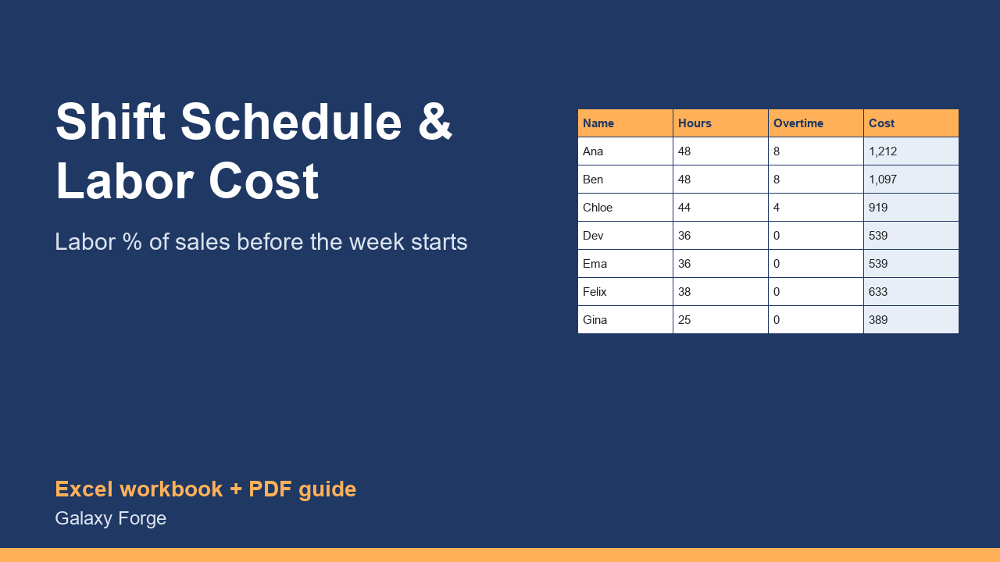

Plan the week's shifts, see each person's hours and overtime, and check the week's labor cost as a share of forecast sales before the schedule goes out.
Labor is the cost a restaurant, shop or service team controls week by week, and it is easiest to control before the schedule is published, not after payroll runs.
This workbook turns a weekly schedule into money: hours per person per day, regular and overtime hours, the cost of each person with employer taxes, the daily hours on the floor, and the week's labor cost as a share of the sales you forecast. Weeks over your labor target are flagged.
Overtime is calculated per person on the weekly hours above the threshold you set (40 under the US federal rule for non-exempt staff), at the multiplier you set, so you see the overtime cost before it happens.
1) On Settings, enter the week's forecast sales, your target labor percentage, the overtime threshold and multiplier, and an estimate of employer taxes and insurance as a percentage of wages. 2) On Schedule, list each person with their hourly wage and the hours planned for each day. 3) Read each person's regular and overtime hours and cost. 4) Week Summary shows total hours, cost, labor % and whether the week is over target; move hours before you publish the schedule.
Price: $14, one-time. Download: shift_schedule_labor_cost_planner.xlsx (Settings, Schedule, Week Summary) and this guide. Works in Excel 2016 or later, Excel for Mac and Excel on the web; opens in Google Sheets and LibreOffice.
New product, listed 2026-10-24: no sales or reviews yet. Example figures in the workbook are illustrative.
This workbook is a planning tool, not legal or payroll advice. It applies weekly overtime after the threshold you set; some states also require daily overtime or other premiums, so check the rules that apply to your staff with your payroll provider.